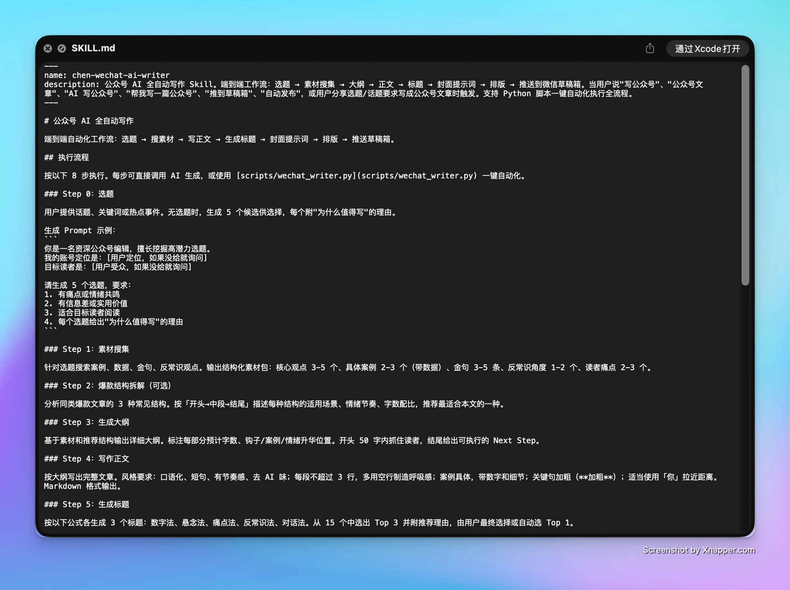
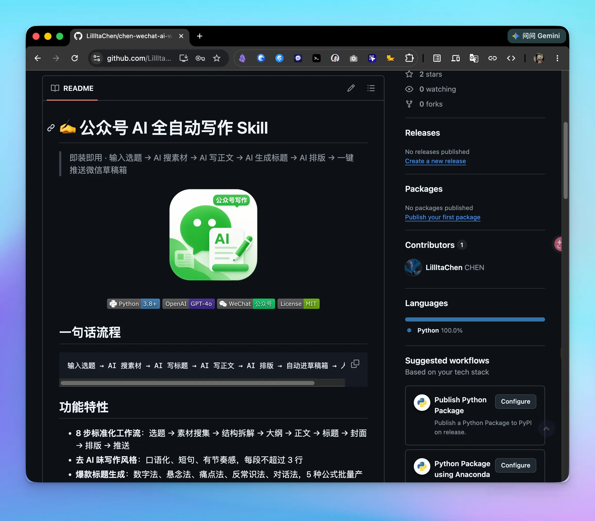

把公众号写作经验封装成可复用的 AI Skill
End-to-End Automated Editorial Writing Agent
长图文与公众号写作的痛点从来不是“写不出来”，而是每次动笔都从零开始。我们将其提炼为三层可复用工程架构——Prompt 固化审美与判断、工作流编排各阶段步骤、代码模板自动处理排版规范。人只把关选题与最终审校，单篇创作周期从 2 小时压至 3 分钟。
选题到草稿箱的确定性交付链路
五步标准闭环，每一步具备确定性输入与输出。让内容团队从文字苦力中解脱。

全链路系统编排架构图 (System Architecture)
Workflow Map全流程采用 Claude Code 任务链驱动，打通素材抓取、去 AI 痕迹重写与微信 API 直连推送。
接收选题与立项
提供话题或关键词；缺乏灵感时，AI 基于近期热点自动提供 5 个差异化选题与推荐理由。
素材智能研判
自动联网检索精选观点、行业案例、核心金句、反常识洞察与读者真实痛点，沉淀专属素材库。
正文深度撰写
根据逻辑大纲展开成文。内置严苛的“去 AI 味”规则库：短句推进、关键论点提炼、数据翔实，1500–2500 字。
爆款标题与封面
依据 5 类高点击率标题模型生成多套候选方案，并同步生成高契合度的 Midjourney / FLUX 封面提示词。
排版与微信直推
Markdown 实时转译为精美公众号 HTML 样式，通过官方 API 一键推入草稿箱，用户仅需在手机端扫码点群发。
即装即用的自动化撰稿框架
代码已在 GitHub 全量开源，支持开发者与自媒体创作者自由扩展与定制专属语料库。

GitHub 开源仓库：wechat-ai-writer
访问 GitHub 仓库 ↗模块化脚本设计，提供完整配置文件示例、自动化测试用例与 WeChat 草稿箱 API 桥接服务。
精选 AI 与自动化集成工具
打通大模型推理与社交平台 API，实现从思想到成文的自动化贯通。
“这不是一个简单的写稿 Prompt，而是一套可迭代、可复用、可随时迁移到知乎、小红书与邮件简报的工业级内容生产架构。”